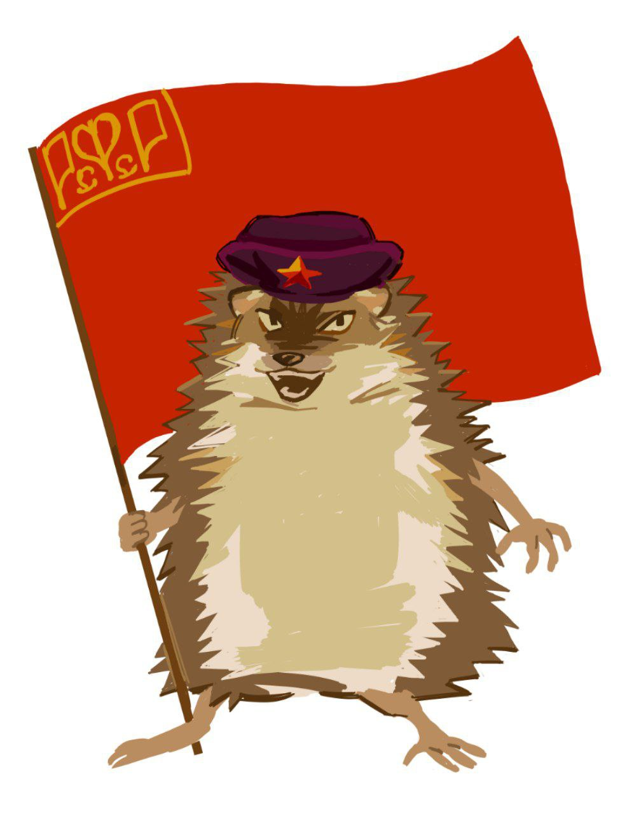

|
|
|
Независимый публицистический ресурс, стоящий на позициях марксизма, диалектического и исторического материализма.
 |
Своей первичной задачей считаем продвижение марксизма, методологии диалектического и исторического материализма в массы, а также борьбу с современным ревизионизмом и догматизмом — противоречиями идеологического процесса. Мировоззрение сознательного пролетариата, напротив, научно. Поэтому, считаем необходимым прибегать именно к руководству научной методологией и материализмом, а не к ядру догм (особенно в отношении марксизма). Это означает, что истину этого мира следует принимать «как есть», без игры воображения в угоду тому, что вам нравится видеть. Пролетариат может быть освобожден только через принятие науки, которая предоставляет методы для определения единственной и единственно возможной истины по определенной теме в определенном контексте. Всё, что отказывается от науки, нас не интересует. У нас вы можете увидеть: разборы известных исторических мифов и насущных вопросов, ликбезы, большие исследовательские работы и т.д. |
Голой рукою нас не возьмешь.
Товарищи, — все под ружья!
Красная Армия — Красный еж —
железная сила содружья.
Рабочий на фабрике, куй, как куёшь,
Деникина день сосчитан!
Красная Армия — Красный еж —
верная наша защита.
Крестьяне, спокойно сейте рожь,
час Колчака сосчитан!
Красная Армия — Красный еж —
лучшая наша защита.
Врангель занес на Коммуну нож,
баронов срок сосчитан!
Красная Армия — Красный еж —
не выдаст наша защита.
Назад, генералы, нас не возьмешь!
Наземь кидайте оружье.
Красная Армия — Красный еж —
железная сила содружья.
В. Маяковский
|
Красный Ёж |
Статьи: | Мы в соцсетях
|